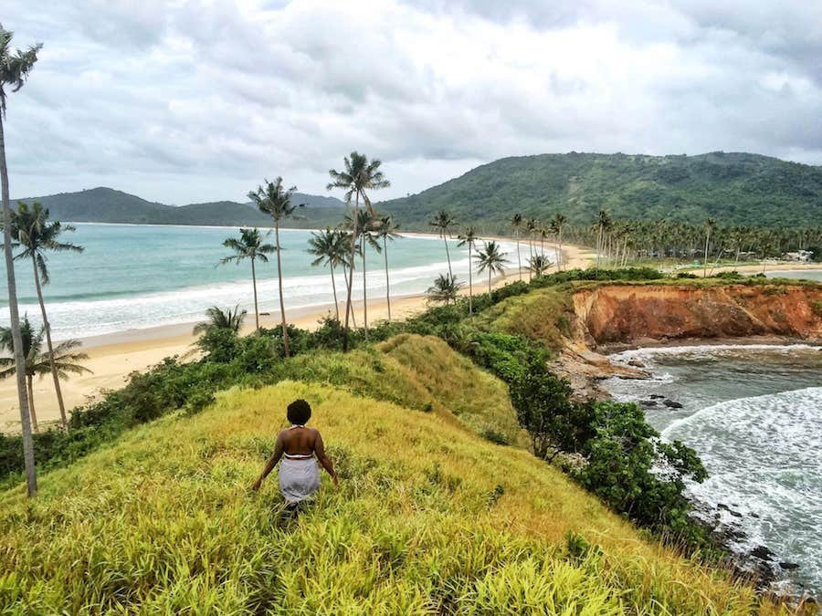
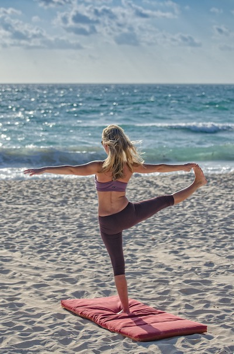
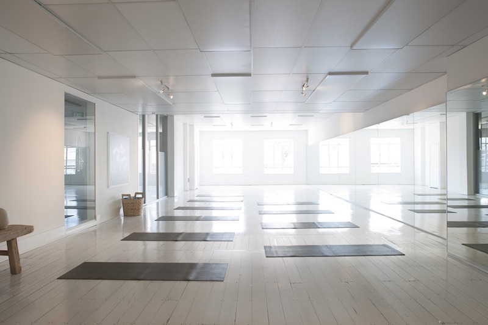
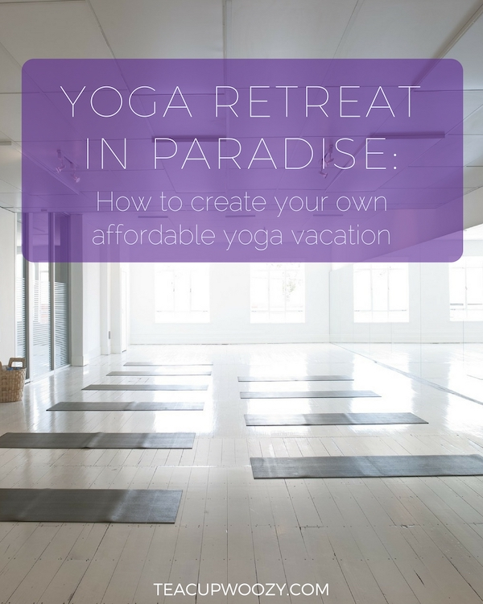

Yoga Retreat in Paradise: How to create your own affordable yoga vacation
January 18, 2018

For many, the idea of doing an all-inclusive destination yoga retreat is very alluring: swaying palm trees, tropical breezes, an endless supply of healthy smoothies and salads, with plenty of time to improve your yoga practice while fostering a zen-like calmness that you can bring back home.
Unfortunately, yoga retreats don't always live up to their expectations and attendees are sometimes left feeling disappointed or worse. And, many of these yoga retreats are are just too expensive to even be an option for a lot of people.
Another obstacle some people face is they have to make the tough choice of how to spend their limited vacation time each year: do you really want to burn up half of your year's vacation time by drinking green smoothies and exercising instead of savoring decadent meals, sipping on tropical cocktails, and sightseeing? And, really, do you want to spend all that money getting to your tropical destination only to have your time so booked up that you can't even do any sightseeing or enjoy other activities that make that destination special?
For those of you trying to find a balance, I think there's a perfect solution: create your own DIY yoga vacation by utilizing yoga studios at your destination! The process is simple: pick your destination, find a yoga studio (or two!) that suits your style, book nearby accommodations, and then pack your bags!

Then, while you're on vacation you can spend two or three hours a day on your yoga practice and the rest of the time you can go explore and enjoy the rest of your time on your own terms. And, all of this will come with a much more affordable price tag.
By creating your own yoga vacation, you can still go out to restaurants and stuff yourself senseless on the local specialties and you can order that extra glass of wine. You can also go do and explore other activities that you love. Do you love hiking? Then you can go hit the nearby trails. Are you into diving? Go out with a local dive boat. Do you want to spend eight hours a day lounging poolside, then go ahead and knock yourself out. You won't have a strict yoga retreat schedule holding you back.
As an example, on Maui, there are an abundance of excellent yoga studios all over the island and many of them have special one-week passes just for visitors. Afterglow Yoga in Lahaina (they also have studios in Wailuku and Kihei) has a one-week visitor pass for $65 that offers unlimited yoga. They were also voted 2017's Best Yoga Studio by MauiTime.
Or, for a more beachy vibe you could check out Maui Yoga Shala (studios in Paia and Wailea). They offer sunrise beach yoga at both of their locations.
And, if having close access to some of Maui's best hiking is more your thing, you could check out Mangala Yoga (in Makawao and Haiku). The have a $45 visitor pass that includes three classes and a mat rental. And, by staying in Upcountry Maui and visiting Mangala Yoga, you'll be right on the doorstep to the other-worldly trails in Haleakala National Park, along with great hiking in the Makawao Forest Reserve, Polipoli Springs, the Kula Forest Reserve, and Waihou Springs.
One extra tip I have for those of you ready to create your own DIY yoga vacation is to decide on a yoga schedule and then commit to it. Unless you have particularly strong willpower, it might be easy to start neglecting your yoga practice in favor of sleeping in, staying out late, or just flaking out because, hey, you're on vacation.
Instead, decide ahead of time how much yoga you realistically would like to do while on your vacation. Then, prioritize those classes over everything else and commit to going. For example, maybe you decide to attend sunrise yoga every morning of your vacation. Then, you can spend the rest of each day doing other activities that interest you.
And just think, if you're done with yoga by 9 a.m., what's to stop you from a mimosa by the pool or a snorkel at 10?
If you're interested in creating your own affordable and flexible yoga vacation, I can help with that.
Maui yoga studios recommended in this article: Afterglow Yoga (Lahaina, Kihei, and Wailuku) https://www.afterglowyoga.com 1-week unlimited visitor pass $65, or they have 5 and 10 class passes starting at $80.
Mangala Yoga (Makawao and Haiku) http://www.mangalayogastudios.com A 3-class visitor pass with a mat rental is $45.
Maui Yoga Shala (Paia and Wailea) http://www.maui-yoga.com/ 1-week unlimited yoga for $90, or they have 3, 5 and 10 class passes starting at $54.
Top cover photo via @vaycarious! For a healthy dose of wanderlust, check out her totally inspirational feed.
